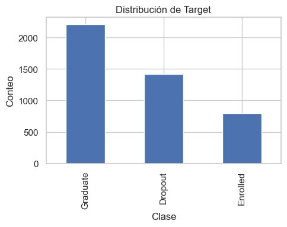
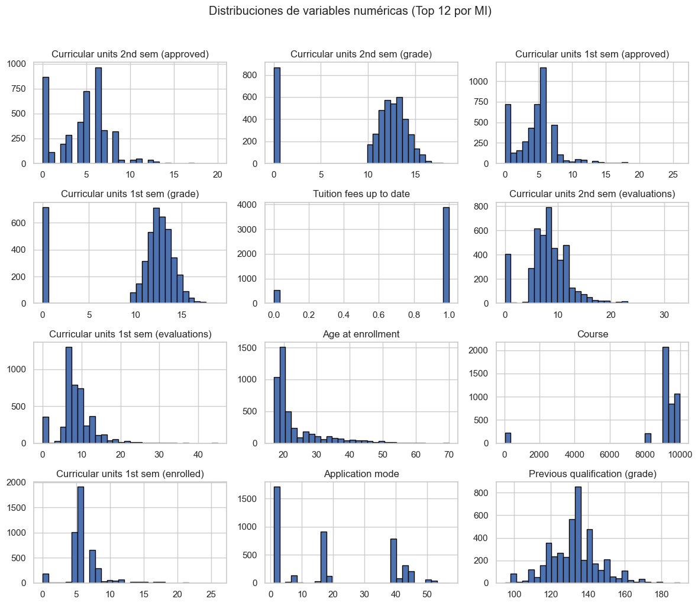
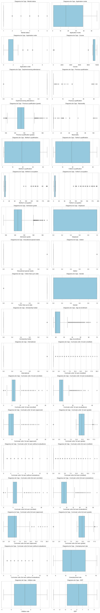

ANALISIS EXPLORATORIO DE LOS DATOS#
# ==== Librerías ====
import math
import numpy as np
import pandas as pd
import matplotlib.pyplot as plt
import seaborn as sns
from IPython.display import display
sns.set(style="whitegrid")
Información general de los datos#
El conjunto de datos analizado contiene información académica y sociodemográfica de estudiantes universitarios, con un total de 4.424 registros y 37 variables. Estas variables incluyen datos numéricos (por ejemplo, edad, número de unidades curriculares aprobadas o reprobadas, promedio de calificaciones) y categóricos (por ejemplo, estado civil, tipo de curso, área de estudio).
csv_path = "data.csv"
df = pd.read_csv(csv_path, sep=";")
df.head()
| Marital status | Application mode | Application order | Course | Daytime/evening attendance\t | Previous qualification | Previous qualification (grade) | Nacionality | Mother's qualification | Father's qualification | ... | Curricular units 2nd sem (credited) | Curricular units 2nd sem (enrolled) | Curricular units 2nd sem (evaluations) | Curricular units 2nd sem (approved) | Curricular units 2nd sem (grade) | Curricular units 2nd sem (without evaluations) | Unemployment rate | Inflation rate | GDP | Target | |
|---|---|---|---|---|---|---|---|---|---|---|---|---|---|---|---|---|---|---|---|---|---|
| 0 | 1 | 17 | 5 | 171 | 1 | 1 | 122.0 | 1 | 19 | 12 | ... | 0 | 0 | 0 | 0 | 0.000000 | 0 | 10.8 | 1.4 | 1.74 | Dropout |
| 1 | 1 | 15 | 1 | 9254 | 1 | 1 | 160.0 | 1 | 1 | 3 | ... | 0 | 6 | 6 | 6 | 13.666667 | 0 | 13.9 | -0.3 | 0.79 | Graduate |
| 2 | 1 | 1 | 5 | 9070 | 1 | 1 | 122.0 | 1 | 37 | 37 | ... | 0 | 6 | 0 | 0 | 0.000000 | 0 | 10.8 | 1.4 | 1.74 | Dropout |
| 3 | 1 | 17 | 2 | 9773 | 1 | 1 | 122.0 | 1 | 38 | 37 | ... | 0 | 6 | 10 | 5 | 12.400000 | 0 | 9.4 | -0.8 | -3.12 | Graduate |
| 4 | 2 | 39 | 1 | 8014 | 0 | 1 | 100.0 | 1 | 37 | 38 | ... | 0 | 6 | 6 | 6 | 13.000000 | 0 | 13.9 | -0.3 | 0.79 | Graduate |
5 rows × 37 columns
print(df.shape)
(4424, 37)
Dimensiones (df.shape)
4,424 filas × 37 columnas → tamaño medio; suficiente para KNN/Reg. Logística.
37 features
Tipos de datos (df.dtypes)#
print(df.dtypes)
Marital status int64
Application mode int64
Application order int64
Course int64
Daytime/evening attendance\t int64
Previous qualification int64
Previous qualification (grade) float64
Nacionality int64
Mother's qualification int64
Father's qualification int64
Mother's occupation int64
Father's occupation int64
Admission grade float64
Displaced int64
Educational special needs int64
Debtor int64
Tuition fees up to date int64
Gender int64
Scholarship holder int64
Age at enrollment int64
International int64
Curricular units 1st sem (credited) int64
Curricular units 1st sem (enrolled) int64
Curricular units 1st sem (evaluations) int64
Curricular units 1st sem (approved) int64
Curricular units 1st sem (grade) float64
Curricular units 1st sem (without evaluations) int64
Curricular units 2nd sem (credited) int64
Curricular units 2nd sem (enrolled) int64
Curricular units 2nd sem (evaluations) int64
Curricular units 2nd sem (approved) int64
Curricular units 2nd sem (grade) float64
Curricular units 2nd sem (without evaluations) int64
Unemployment rate float64
Inflation rate float64
GDP float64
Target object
dtype: object
Predominan int64 y algunas float64.
Varias
int64son códigos categóricos (p. ej., Marital status, Course, Debtor, International, Scholarship holder)Continuas clave: Admission grade, Previous qualification (grade), Inflation rate, GDP
Targetesobjectvamos a renombrar
Daytime/evening attendance\t(tiene tab) antes del modelado.
Consideración de Variables#
Variable |
Tipo considerado |
Nota de tratamiento |
|---|---|---|
Displaced |
Binaria |
Validar {0,1}, no aplicar outliers |
Educational special needs |
Binaria |
Validar {0,1}, no aplicar outliers |
Debtor |
Binaria |
Validar {0,1}, no aplicar outliers |
Tuition fees up to date |
Binaria |
Validar {0,1}, no aplicar outliers |
Gender |
Binaria |
Validar {0,1}, no aplicar outliers |
Scholarship holder |
Binaria |
Validar {0,1}, no aplicar outliers |
International |
Binaria |
Validar {0,1}, no aplicar outliers |
Marital status |
Categórica |
Tiene codificación (One-Hot / Ordinal) |
Application mode |
Categórica |
Tiene codificación |
Application order |
Categórica |
Tiene codificación |
Course |
Categórica |
Tiene codificación |
Daytime/evening attendance |
Categórica |
Tiene codificación |
Nacionality |
Categórica |
Tiene codificación |
Mother’s qualification |
Categórica |
Tiene codificación |
Father’s qualification |
Categórica |
Tiene codificación |
Mother’s occupation |
Categórica |
Tiene codificación |
Father’s occupation |
Categórica |
Tiene codificación |
Target (objetivo) |
Categórica |
Variable objetivo multiclase (dropout, enrolled, graduate) |
Previous qualification (grade) |
Numérica |
Aplica normalidad, tratamiento de outliers, escalado |
Admission grade |
Numérica |
Aplica normalidad, tratamiento de outliers, escalado |
Age at enrollment |
Numérica |
Aplica normalidad, tratamiento de outliers, escalado |
Curricular units 1st sem (grade) |
Numérica |
Escalado, puede analizar normalidad |
Curricular units 2nd sem (grade) |
Numérica |
Escalado, puede analizar normalidad |
Unemployment rate |
Numérica |
Variable macroeconómica, aplicar normalidad y outliers |
Inflation rate |
Numérica |
Variable macroeconómica, aplicar normalidad y outliers |
GDP |
Numérica |
Variable macroeconómica, aplicar normalidad y outliers |
Curricular units 1st/2nd sem (credited, etc.) |
Numérica |
Conteos → Escalado, outliers si aplica |
promedio_final (derivada) |
Numérica |
Aplica normalidad, tratamiento de outliers, escalado |
Datos Faltantes#
print(df.isna().sum())
Marital status 0
Application mode 0
Application order 0
Course 0
Daytime/evening attendance\t 0
Previous qualification 0
Previous qualification (grade) 0
Nacionality 0
Mother's qualification 0
Father's qualification 0
Mother's occupation 0
Father's occupation 0
Admission grade 0
Displaced 0
Educational special needs 0
Debtor 0
Tuition fees up to date 0
Gender 0
Scholarship holder 0
Age at enrollment 0
International 0
Curricular units 1st sem (credited) 0
Curricular units 1st sem (enrolled) 0
Curricular units 1st sem (evaluations) 0
Curricular units 1st sem (approved) 0
Curricular units 1st sem (grade) 0
Curricular units 1st sem (without evaluations) 0
Curricular units 2nd sem (credited) 0
Curricular units 2nd sem (enrolled) 0
Curricular units 2nd sem (evaluations) 0
Curricular units 2nd sem (approved) 0
Curricular units 2nd sem (grade) 0
Curricular units 2nd sem (without evaluations) 0
Unemployment rate 0
Inflation rate 0
GDP 0
Target 0
dtype: int64
Nulos (df.isna().sum())
0 nulos en todas las columnas
Descripción de variables#
df.describe(include='all')
| Marital status | Application mode | Application order | Course | Daytime/evening attendance\t | Previous qualification | Previous qualification (grade) | Nacionality | Mother's qualification | Father's qualification | ... | Curricular units 2nd sem (credited) | Curricular units 2nd sem (enrolled) | Curricular units 2nd sem (evaluations) | Curricular units 2nd sem (approved) | Curricular units 2nd sem (grade) | Curricular units 2nd sem (without evaluations) | Unemployment rate | Inflation rate | GDP | Target | |
|---|---|---|---|---|---|---|---|---|---|---|---|---|---|---|---|---|---|---|---|---|---|
| count | 4424.000000 | 4424.000000 | 4424.000000 | 4424.000000 | 4424.000000 | 4424.000000 | 4424.000000 | 4424.000000 | 4424.000000 | 4424.000000 | ... | 4424.000000 | 4424.000000 | 4424.000000 | 4424.000000 | 4424.000000 | 4424.000000 | 4424.000000 | 4424.000000 | 4424.000000 | 4424 |
| unique | NaN | NaN | NaN | NaN | NaN | NaN | NaN | NaN | NaN | NaN | ... | NaN | NaN | NaN | NaN | NaN | NaN | NaN | NaN | NaN | 3 |
| top | NaN | NaN | NaN | NaN | NaN | NaN | NaN | NaN | NaN | NaN | ... | NaN | NaN | NaN | NaN | NaN | NaN | NaN | NaN | NaN | Graduate |
| freq | NaN | NaN | NaN | NaN | NaN | NaN | NaN | NaN | NaN | NaN | ... | NaN | NaN | NaN | NaN | NaN | NaN | NaN | NaN | NaN | 2209 |
| mean | 1.178571 | 18.669078 | 1.727848 | 8856.642631 | 0.890823 | 4.577758 | 132.613314 | 1.873192 | 19.561935 | 22.275316 | ... | 0.541817 | 6.232143 | 8.063291 | 4.435805 | 10.230206 | 0.150316 | 11.566139 | 1.228029 | 0.001969 | NaN |
| std | 0.605747 | 17.484682 | 1.313793 | 2063.566416 | 0.311897 | 10.216592 | 13.188332 | 6.914514 | 15.603186 | 15.343108 | ... | 1.918546 | 2.195951 | 3.947951 | 3.014764 | 5.210808 | 0.753774 | 2.663850 | 1.382711 | 2.269935 | NaN |
| min | 1.000000 | 1.000000 | 0.000000 | 33.000000 | 0.000000 | 1.000000 | 95.000000 | 1.000000 | 1.000000 | 1.000000 | ... | 0.000000 | 0.000000 | 0.000000 | 0.000000 | 0.000000 | 0.000000 | 7.600000 | -0.800000 | -4.060000 | NaN |
| 25% | 1.000000 | 1.000000 | 1.000000 | 9085.000000 | 1.000000 | 1.000000 | 125.000000 | 1.000000 | 2.000000 | 3.000000 | ... | 0.000000 | 5.000000 | 6.000000 | 2.000000 | 10.750000 | 0.000000 | 9.400000 | 0.300000 | -1.700000 | NaN |
| 50% | 1.000000 | 17.000000 | 1.000000 | 9238.000000 | 1.000000 | 1.000000 | 133.100000 | 1.000000 | 19.000000 | 19.000000 | ... | 0.000000 | 6.000000 | 8.000000 | 5.000000 | 12.200000 | 0.000000 | 11.100000 | 1.400000 | 0.320000 | NaN |
| 75% | 1.000000 | 39.000000 | 2.000000 | 9556.000000 | 1.000000 | 1.000000 | 140.000000 | 1.000000 | 37.000000 | 37.000000 | ... | 0.000000 | 7.000000 | 10.000000 | 6.000000 | 13.333333 | 0.000000 | 13.900000 | 2.600000 | 1.790000 | NaN |
| max | 6.000000 | 57.000000 | 9.000000 | 9991.000000 | 1.000000 | 43.000000 | 190.000000 | 109.000000 | 44.000000 | 44.000000 | ... | 19.000000 | 23.000000 | 33.000000 | 20.000000 | 18.571429 | 12.000000 | 16.200000 | 3.700000 | 3.510000 | NaN |
11 rows × 37 columns
describe()
Todas las columnas aparecen como numéricas, pero varias son códigos categóricos (p. ej., Marital status, Course, Daytime/evening attendance).
Variables claramente continuas: Previous qualification (grade) (95–190), Admission grade, etc.; muestran rangos amplios y posible asimetría, por lo que conviene escalar/estandarizar (especialmente para KNN).
Daytime/evening attendancees binaria (0/1) con media ≈0.89 → mayoría diurna/nocturna según codificación.Varias métricas académicas por semestre tienen valores bajos/promedios pequeños (p. ej., credited 2nd sem)
Duplicados#
dups = df.duplicated().sum()
print("\nFilas duplicadas:", dups)
if dups > 0:
df = df.drop_duplicates().reset_index(drop=True)
print(" Duplicados eliminados. Nuevas dimensiones:", df.shape)
Filas duplicadas: 0
Valores únicos#
card = df.nunique().sort_values(ascending=False)
print("\nCardinalidad (valores únicos) por columna (top 15):")
print(card.head(15))
Cardinalidad (valores únicos) por columna (top 15):
Curricular units 1st sem (grade) 805
Curricular units 2nd sem (grade) 786
Admission grade 620
Previous qualification (grade) 101
Father's occupation 46
Age at enrollment 46
Curricular units 1st sem (evaluations) 35
Father's qualification 34
Mother's occupation 32
Curricular units 2nd sem (evaluations) 30
Mother's qualification 29
Curricular units 1st sem (enrolled) 23
Curricular units 1st sem (approved) 23
Curricular units 2nd sem (enrolled) 22
Curricular units 1st sem (credited) 21
dtype: int64
# Resumen de numéricas
num_cols = df.select_dtypes(include=[np.number]).columns.tolist()
if num_cols:
print("Resumen estadístico de variables numéricas:")
display(df[num_cols].describe().T)
else:
print("No se detectaron columnas numéricas.")
Resumen estadístico de variables numéricas:
| count | mean | std | min | 25% | 50% | 75% | max | |
|---|---|---|---|---|---|---|---|---|
| Marital status | 4424.0 | 1.178571 | 0.605747 | 1.00 | 1.00 | 1.000000 | 1.000000 | 6.000000 |
| Application mode | 4424.0 | 18.669078 | 17.484682 | 1.00 | 1.00 | 17.000000 | 39.000000 | 57.000000 |
| Application order | 4424.0 | 1.727848 | 1.313793 | 0.00 | 1.00 | 1.000000 | 2.000000 | 9.000000 |
| Course | 4424.0 | 8856.642631 | 2063.566416 | 33.00 | 9085.00 | 9238.000000 | 9556.000000 | 9991.000000 |
| Daytime/evening attendance\t | 4424.0 | 0.890823 | 0.311897 | 0.00 | 1.00 | 1.000000 | 1.000000 | 1.000000 |
| Previous qualification | 4424.0 | 4.577758 | 10.216592 | 1.00 | 1.00 | 1.000000 | 1.000000 | 43.000000 |
| Previous qualification (grade) | 4424.0 | 132.613314 | 13.188332 | 95.00 | 125.00 | 133.100000 | 140.000000 | 190.000000 |
| Nacionality | 4424.0 | 1.873192 | 6.914514 | 1.00 | 1.00 | 1.000000 | 1.000000 | 109.000000 |
| Mother's qualification | 4424.0 | 19.561935 | 15.603186 | 1.00 | 2.00 | 19.000000 | 37.000000 | 44.000000 |
| Father's qualification | 4424.0 | 22.275316 | 15.343108 | 1.00 | 3.00 | 19.000000 | 37.000000 | 44.000000 |
| Mother's occupation | 4424.0 | 10.960895 | 26.418253 | 0.00 | 4.00 | 5.000000 | 9.000000 | 194.000000 |
| Father's occupation | 4424.0 | 11.032324 | 25.263040 | 0.00 | 4.00 | 7.000000 | 9.000000 | 195.000000 |
| Admission grade | 4424.0 | 126.978119 | 14.482001 | 95.00 | 117.90 | 126.100000 | 134.800000 | 190.000000 |
| Displaced | 4424.0 | 0.548373 | 0.497711 | 0.00 | 0.00 | 1.000000 | 1.000000 | 1.000000 |
| Educational special needs | 4424.0 | 0.011528 | 0.106760 | 0.00 | 0.00 | 0.000000 | 0.000000 | 1.000000 |
| Debtor | 4424.0 | 0.113698 | 0.317480 | 0.00 | 0.00 | 0.000000 | 0.000000 | 1.000000 |
| Tuition fees up to date | 4424.0 | 0.880651 | 0.324235 | 0.00 | 1.00 | 1.000000 | 1.000000 | 1.000000 |
| Gender | 4424.0 | 0.351718 | 0.477560 | 0.00 | 0.00 | 0.000000 | 1.000000 | 1.000000 |
| Scholarship holder | 4424.0 | 0.248418 | 0.432144 | 0.00 | 0.00 | 0.000000 | 0.000000 | 1.000000 |
| Age at enrollment | 4424.0 | 23.265145 | 7.587816 | 17.00 | 19.00 | 20.000000 | 25.000000 | 70.000000 |
| International | 4424.0 | 0.024864 | 0.155729 | 0.00 | 0.00 | 0.000000 | 0.000000 | 1.000000 |
| Curricular units 1st sem (credited) | 4424.0 | 0.709991 | 2.360507 | 0.00 | 0.00 | 0.000000 | 0.000000 | 20.000000 |
| Curricular units 1st sem (enrolled) | 4424.0 | 6.270570 | 2.480178 | 0.00 | 5.00 | 6.000000 | 7.000000 | 26.000000 |
| Curricular units 1st sem (evaluations) | 4424.0 | 8.299051 | 4.179106 | 0.00 | 6.00 | 8.000000 | 10.000000 | 45.000000 |
| Curricular units 1st sem (approved) | 4424.0 | 4.706600 | 3.094238 | 0.00 | 3.00 | 5.000000 | 6.000000 | 26.000000 |
| Curricular units 1st sem (grade) | 4424.0 | 10.640822 | 4.843663 | 0.00 | 11.00 | 12.285714 | 13.400000 | 18.875000 |
| Curricular units 1st sem (without evaluations) | 4424.0 | 0.137658 | 0.690880 | 0.00 | 0.00 | 0.000000 | 0.000000 | 12.000000 |
| Curricular units 2nd sem (credited) | 4424.0 | 0.541817 | 1.918546 | 0.00 | 0.00 | 0.000000 | 0.000000 | 19.000000 |
| Curricular units 2nd sem (enrolled) | 4424.0 | 6.232143 | 2.195951 | 0.00 | 5.00 | 6.000000 | 7.000000 | 23.000000 |
| Curricular units 2nd sem (evaluations) | 4424.0 | 8.063291 | 3.947951 | 0.00 | 6.00 | 8.000000 | 10.000000 | 33.000000 |
| Curricular units 2nd sem (approved) | 4424.0 | 4.435805 | 3.014764 | 0.00 | 2.00 | 5.000000 | 6.000000 | 20.000000 |
| Curricular units 2nd sem (grade) | 4424.0 | 10.230206 | 5.210808 | 0.00 | 10.75 | 12.200000 | 13.333333 | 18.571429 |
| Curricular units 2nd sem (without evaluations) | 4424.0 | 0.150316 | 0.753774 | 0.00 | 0.00 | 0.000000 | 0.000000 | 12.000000 |
| Unemployment rate | 4424.0 | 11.566139 | 2.663850 | 7.60 | 9.40 | 11.100000 | 13.900000 | 16.200000 |
| Inflation rate | 4424.0 | 1.228029 | 1.382711 | -0.80 | 0.30 | 1.400000 | 2.600000 | 3.700000 |
| GDP | 4424.0 | 0.001969 | 2.269935 | -4.06 | -1.70 | 0.320000 | 1.790000 | 3.510000 |
Distribución de Target#
TARGET = "Target"
if TARGET in df.columns:
vc = df[TARGET].value_counts(dropna=False)
vp = df[TARGET].value_counts(normalize=True, dropna=False)*100
print("\nDistribución de Target (conteo y %):")
display(pd.DataFrame({"conteo": vc, "porcentaje": vp.round(2)}))
plt.figure(figsize=(5,4))
vc.plot(kind="bar")
plt.title("Distribución de Target")
plt.ylabel("Conteo")
plt.xlabel("Clase")
plt.tight_layout()
plt.show()
else:
raise ValueError(f"No se encontró la columna objetivo '{TARGET}'.")
Distribución de Target (conteo y %):
| conteo | porcentaje | |
|---|---|---|
| Target | ||
| Graduate | 2209 | 49.93 |
| Dropout | 1421 | 32.12 |
| Enrolled | 794 | 17.95 |

Graduate 49.93%, Dropout 32.12%, Enrolled 17.95%
Desbalance#
THRESH_HIGH = 0.75 # >75%: MUY desbalanceada
THRESH_MED = 0.60 # 60-75%: desbalanceada (usable con técnicas)
def recomendacion_balance(vc_norm, thr_high=0.75, thr_med=0.60):
mayoritaria = vc_norm.iloc[0]
clase = vc_norm.index[0]
if mayoritaria > thr_high:
return f" variable muy desbalanceada (clase mayoritaria '{clase}' = {mayoritaria*100:.2f}%). Recomendación: NO USAR.", "no_usar"
elif mayoritaria > thr_med:
return (f"variable Desbalanceada (clase mayoritaria '{clase}' = {mayoritaria*100:.2f}%)." , "re_muestrear")
else:
return f"variable Balanceada (clase mayoritaria '{clase}' = {mayoritaria*100:.2f}%). Recomendación: USAR.", "usar"
# Opción: binarizar (Dropout vs resto) al estilo del EDA
MAP_TO_BINARY = True
y = df[TARGET].copy()
if MAP_TO_BINARY:
y = y.replace({"Enrolled": "No_dropout", "Graduate": "No_dropout"})
if np.issubdtype(y.dtype, np.number) and y.nunique() > 10:
print("ℹ El Target parece continuo (regresión). El desbalance no aplica como en clasificación.")
else:
vc_norm = y.value_counts(normalize=True)
msg, tag = recomendacion_balance(vc_norm, THRESH_HIGH, THRESH_MED)
print(msg)
variable Desbalanceada (clase mayoritaria 'No_dropout' = 67.88%).
Resultado: Desbalanceada (clase mayoritaria
No_dropout= 67.88%).68% no desertan vs ~32% desertan.
Variables relevantes vs Target#
# --- Solo graficar las numéricas más importantes vs Target ---
from sklearn.feature_selection import mutual_info_classif
import numpy as np
import pandas as pd
import matplotlib.pyplot as plt
TOP_N = 12 # cuántas columnas quieres graficar
# 1) columnas numéricas
num_cols = df.select_dtypes(include=[np.number]).columns.tolist()
if not num_cols:
print("No hay columnas numéricas para evaluar.")
else:
# 2) preparar X (numéricas) e y (códigos de la clase)
X_num = df[num_cols].replace([np.inf, -np.inf], np.nan)
X_num = X_num.fillna(X_num.median()) # solo para calcular MI
y = df[TARGET].astype("category").cat.codes
# 3) importancia por Mutual Information
mi = mutual_info_classif(X_num, y, discrete_features=False, random_state=42)
mi_series = pd.Series(mi, index=num_cols).sort_values(ascending=False)
print("Top variables por MI con Target:")
display(mi_series.head(TOP_N))
# 4) graficar solo las TOP_N
top_cols = mi_series.head(min(TOP_N, len(mi_series))).index.tolist()
ax = df[top_cols].hist(bins=30, figsize=(12,10), edgecolor="black")
plt.suptitle(f"Distribuciones de variables numéricas (Top {len(top_cols)} por MI)", y=1.02)
plt.tight_layout()
plt.show()
Top variables por MI con Target:
Curricular units 2nd sem (approved) 0.310207
Curricular units 2nd sem (grade) 0.239324
Curricular units 1st sem (approved) 0.233439
Curricular units 1st sem (grade) 0.184882
Tuition fees up to date 0.100460
Curricular units 2nd sem (evaluations) 0.096761
Curricular units 1st sem (evaluations) 0.075691
Age at enrollment 0.065516
Course 0.053425
Curricular units 1st sem (enrolled) 0.052744
Application mode 0.046571
Previous qualification (grade) 0.044584
dtype: float64

Top 12 numéricas
Se repiten mucho las curricular units (approved/grade/evaluations/enrolled, 1º y 2º sem). Claramente son las que más se relacionan con el Target.
Age at enrollment está sesgada (muchos jóvenes). Para KNN conviene escalar.
Course y Application mode tienen picos tipo IDs → son categóricas, no continuas (one-hot).
En general, antes de KNN: StandardScaler sí o sí (hay escalas muy distintas).
Verificación de normalidad#
import pandas as pd
import numpy as np
from scipy.stats import shapiro
def test_normalidad(df):
"""
Aplica el test de normalidad Shapiro-Wilk a las variables numéricas de un DataFrame
(válido para datasets con menos de 5000 registros).
Parámetros:
-----------
df : pd.DataFrame
Dataset de entrada.
Retorna:
--------
pd.DataFrame con columnas:
- Variable
- Estadístico W
- p-valor
- Normalidad (Normal / No Normal / Datos insuficientes)
"""
# Seleccionar solo variables numéricas
numericas = df.select_dtypes(include=[np.number])
if len(df) >= 5000:
print("⚠️ El dataset tiene 5000 o más registros, el test de Shapiro no es recomendado.")
return None
n_cols = 2
n_rows = int(np.ceil(len(numericas.columns) / n_cols))
fig, axes = plt.subplots(n_rows, n_cols, figsize=(12, 4 * n_rows))
axes = axes.flatten() # Asegurar formato 1D para iterar
for i, col in enumerate(numericas.columns):
sns.boxplot(x=numericas[col], ax=axes[i], color="skyblue")
axes[i].set_title(f"Diagrama de Caja - {col}", fontsize=12)
axes[i].set_xlabel(col)
# Eliminar ejes sobrantes si hay menos gráficos que subplots
for j in range(i + 1, len(axes)):
fig.delaxes(axes[j])
plt.tight_layout()
plt.show()
resultados = []
for col in numericas.columns:
datos = numericas[col].dropna()
if len(datos) > 3: # Shapiro requiere al menos 3 valores
stat, p = shapiro(datos)
normalidad = "Normal" if p > 0.05 else "No Normal"
resultados.append([col, stat, p, normalidad])
else:
resultados.append([col, None, None, "Datos insuficientes"])
resultados_df = pd.DataFrame(resultados,
columns=["Variable", "Estadístico W", "p-valor", "Normalidad"])
return resultados_df
resultado = test_normalidad(df)
resultado
C:\Users\franc\AppData\Local\Temp\ipykernel_18568\4162327466.py:45: UserWarning: Glyph 9 ( ) missing from font(s) Arial.
plt.tight_layout()
c:\Users\franc\anaconda3\envs\ml_env\Lib\site-packages\IPython\core\pylabtools.py:170: UserWarning: Glyph 9 ( ) missing from font(s) Arial.
fig.canvas.print_figure(bytes_io, **kw)

| Variable | Estadístico W | p-valor | Normalidad | |
|---|---|---|---|---|
| 0 | Marital status | 0.325647 | 1.113040e-83 | No Normal |
| 1 | Application mode | 0.809773 | 3.489577e-58 | No Normal |
| 2 | Application order | 0.619069 | 1.378633e-71 | No Normal |
| 3 | Course | 0.391875 | 2.026925e-81 | No Normal |
| 4 | Daytime/evening attendance\t | 0.359607 | 1.514561e-82 | No Normal |
| 5 | Previous qualification | 0.386257 | 1.279505e-81 | No Normal |
| 6 | Previous qualification (grade) | 0.979897 | 1.443189e-24 | No Normal |
| 7 | Nacionality | 0.106444 | 5.395942e-90 | No Normal |
| 8 | Mother's qualification | 0.794115 | 1.224245e-59 | No Normal |
| 9 | Father's qualification | 0.785018 | 1.926982e-60 | No Normal |
| 10 | Mother's occupation | 0.278190 | 3.485294e-85 | No Normal |
| 11 | Father's occupation | 0.278900 | 3.665096e-85 | No Normal |
| 12 | Admission grade | 0.980482 | 3.176984e-24 | No Normal |
| 13 | Displaced | 0.633213 | 8.063567e-71 | No Normal |
| 14 | Educational special needs | 0.079837 | 1.148946e-90 | No Normal |
| 15 | Debtor | 0.367825 | 2.900461e-82 | No Normal |
| 16 | Tuition fees up to date | 0.377780 | 6.434962e-82 | No Normal |
| 17 | Gender | 0.603839 | 2.189078e-72 | No Normal |
| 18 | Scholarship holder | 0.537206 | 1.337077e-75 | No Normal |
| 19 | Age at enrollment | 0.707169 | 2.421442e-66 | No Normal |
| 20 | International | 0.139565 | 3.918112e-89 | No Normal |
| 21 | Curricular units 1st sem (credited) | 0.343673 | 4.385246e-83 | No Normal |
| 22 | Curricular units 1st sem (enrolled) | 0.730027 | 9.188823e-65 | No Normal |
| 23 | Curricular units 1st sem (evaluations) | 0.902764 | 1.385502e-46 | No Normal |
| 24 | Curricular units 1st sem (approved) | 0.885822 | 3.065710e-49 | No Normal |
| 25 | Curricular units 1st sem (grade) | 0.684601 | 8.402219e-68 | No Normal |
| 26 | Curricular units 1st sem (without evaluations) | 0.201943 | 1.977222e-87 | No Normal |
| 27 | Curricular units 2nd sem (credited) | 0.318655 | 6.595299e-84 | No Normal |
| 28 | Curricular units 2nd sem (enrolled) | 0.785451 | 2.101086e-60 | No Normal |
| 29 | Curricular units 2nd sem (evaluations) | 0.932363 | 7.264400e-41 | No Normal |
| 30 | Curricular units 2nd sem (approved) | 0.918235 | 8.330056e-44 | No Normal |
| 31 | Curricular units 2nd sem (grade) | 0.704320 | 1.565443e-66 | No Normal |
| 32 | Curricular units 2nd sem (without evaluations) | 0.204098 | 2.274622e-87 | No Normal |
| 33 | Unemployment rate | 0.934738 | 2.530875e-40 | No Normal |
| 34 | Inflation rate | 0.923822 | 1.071902e-42 | No Normal |
| 35 | GDP | 0.912016 | 5.701000e-45 | No Normal |